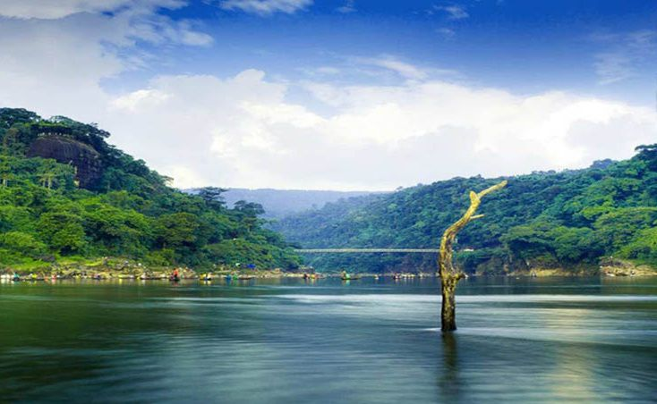

1. Chittagong Hill Tracks:

Hills are always enchanting to the tourist and as a tourist, you should obviously visit Chittagong Hill Tracks once which is the home of many tribal and you can discover yourself in the amazing green view. Chittagong Hill Tracks is the best place for making an adventurous tour and for this you have to take permission from the authority.
2. Srimagal:
The Capital of tea in Bangladesh is Srimagal which is situated in the north-eastern part of the country where you will find lush greenery fields all around. It is one of the best places in Bangladesh where you can really have the place & clam environment and there are two more visiting places too, Lawachhara National Park & Hamham Waterfalls.
3. Rangamati:

The District of Chittagong Hill Tracks area in Rangamati, a place full of natural amusement and here, here, you can find a man-made lake surrounded by Hill called Kaptai Lake where you can take a ride by boat all over the day, a Buddhist Monastery here named Rajban Bihara, a high-quality handicrafts market made by the tribal of Rangamati.
4. Ahsan Manzil:

Ahsan Manzil or the Pink Palace, the most meaningful architectural heritage, was built by Nawab Abdul Gani in 1872. This two-story building is now a museum displaying all kinds of objects of the owner of that time. So you can feel the lifestyle of the Nawabs of Bengal. It has 23 galleries displaying historical things.
5. Jaflong:
This place is situated at the Bangladesh-India border. It is one of the most attractive places in Bangladesh. It is also an adventurous place. It is a hilly area and you can enjoy the waterfall on the way of Jaflong to Sylhet. The hills of Jaflong are greenish with forest and there are many wild animals in the forest. Tea garden and zero points are the most beautiful spot of Jaflong.
2. Inani Beach:

Inani beach is known as a wonderful beach for its corals which become green in summer and rainy season. The blue water, sunrise, and sunset will help you to make you a memorable trip. You can bath here without any fear of a shark. You can see here crab, snail, sea fish, and many more creatures. The view of hills here will also touch your mind.